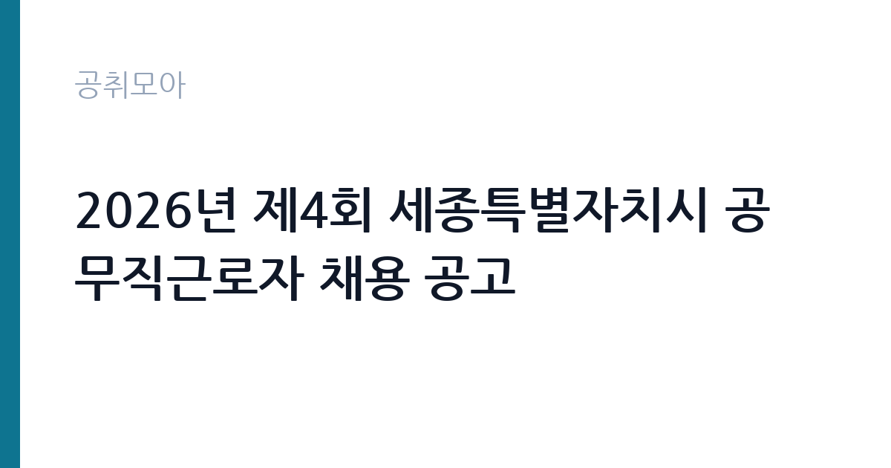

[지자체] 2026년 제4회 세종특별자치시 공무직근로자 채용 공고
세종특별자치시 · 세종 · 마감 2026-11-18 (D-14) · 출처 나라일터

한눈에 보는 모집 조건
| 기관 | 세종특별자치시 |
|---|---|
| 공고명 | 2026년 제4회 세종특별자치시 공무직근로자 채용 공고 |
| 고용형태 | 공무직 |
| 근무지 | 세종 |
| 게시일 | 2026-11-04 |
| 마감일 | 2026-11-18 (D-14) |
지원자격, 이렇게 읽으세요
- 공무직근로자 3명
- 접수 ~2026-11-18 마감
- 세부 조건은 원문 공고문 확인
공무직 근로자는 공무원이 아니라 근로기준법이 적용되는 근로자이지만 기간의 정함이 없는 무기계약으로 채용되는 경우가 많아 정년까지 근무가 가능합니다. 채용은 공무원 시험과 달리 기관의 자체 전형으로 진행되고 인사 규정과 임금표를 적용받습니다. 이번 공고는 세종특별자치시에서 직접 진행하는 자체 전형으로, 응시자격과 제출서류는 공고문에 항목별로 제시됩니다. 분야별 응시자격이 공고문에 따로 제시되어 있으므로 본인 분야의 요건만 확인하면 됩니다. 하수준설원과 시설물관리원은 현장 작업이 많아 신체 조건과 운전면허, 관련 자격 보유 여부가 요건에 붙는 경우가 있습니다. 접수는 2026년 11월 16일부터 18일까지이고 평일 점심시간인 12시부터 13시까지는 받지 않습니다. 방문 또는 등기우편 접수만 가능하고, 접수처는 세종시 한누리대로 2130 세종시청 운영지원과 후생복지팀입니다. 제출서류 서식이 따로 있으므로 공고문 첨부 서식을 그대로 사용하십시오. 서류는 접수 마감 이후 보완이 되지 않으므로 자격 요건과 증빙 서류를 마감 전에 모두 갖춰야 합니다. 공고문에 명시된 우대 사항은 해당 여부를 확인해 증빙을 첨부해야 가점이 반영됩니다. 학력이나 전공 요건이 없는 공고라도 제출서류 목록은 그대로 적용되므로 서류 준비 부담은 줄지 않습니다. 이 공고 원문에 적힌 응시 조건 문구는 '응시자격 : 공고문 참조 4.'입니다. 문구를 그대로 읽고 본인 해당 여부를 하나씩 표시해 두면 서류 단계에서 탈락하는 일을 줄일 수 있습니다.
이 공고의 포인트
이 공고의 첫 번째 포인트는 고용 형태입니다. 무기계약으로 채용되면 정년까지 근무가 가능해 재계약 부담이 없습니다. 반대로 기간제로 채용되는 공고라면 계약 기간을 먼저 확인해야 합니다. 두 번째는 업무 범위가 명확하다는 점입니다. 행정사무보조·하수준설·시설물관리 직무로 채용되므로 배치 이후 담당 업무가 크게 흔들리지 않습니다. 세 번째는 근무지입니다. 세종 지역 근무로 수도권 공고에 비해 지원자 분포가 넓지 않아 상대적으로 경쟁이 분산되는 경우가 있습니다. 같은 기관의 다른 공고와 접수 기간이 겹치므로 중복 지원 가능 여부를 확인해야 합니다. 다만 선발 인원이 3명으로 많지 않아 자격을 갖춘 지원자가 몰리면 경쟁률이 높아질 수 있습니다.
전형은 어떻게 진행되나
서류전형과 면접전형 외에 직무수행능력 평가가 붙는 경우가 있습니다. 평가 방식은 공고문에 구체적으로 적혀 있으므로 어떤 항목에 배점이 높은지 먼저 파악하십시오. 면접에서는 지원 동기보다 실제 업무 경험에 대한 질문이 많고, 답변의 구체성이 평가를 가릅니다. 전형 일정은 서류 마감 이후 빠르게 진행되므로 연락 가능한 번호를 정확히 기재하고 문자와 메일을 수시로 확인해야 합니다. 최종 단계에서는 결격사유 조회와 신체검사가 진행됩니다. 면접조 편성과 대기 시간이 공지되므로 당일 도착 시간을 여유 있게 잡으십시오.
원문에서 확인한 전형 방식
2026년 제4회 세종특별자치시 공무직근로자 공개채용 관련 아래와 같이 공고합니다. 1. 채용인원 : 3명 2. 채용분야 : 공무직근로자(행정사무보조, 하수준설원, 시설물관리원) 3. 응시자격 : 공고문 참조 4. 원서접수 : ‘26. 11. 16. ~ 11. 18.(평일 점심시간(12시~1시)은 접수 제외) 5. 접수방법 : 방문접수, 등기우편접수 - ((우) 30151) 세종시 한누리대로 2130, 세종시청 운영지원과 후생복지팀 공무직근로자 채용담당자 앞 - (문의 044-300-3033) 6. 제출서류 : 공고문 및 제출서류(서식) 참조
이런 분께 추천해요
- 행정 보조 또는 현장 시설·환경 관리 경험이 있는 분
- 방문·등기우편 접수 일정에 맞출 수 있는 분
- 주민 응대와 현장 작업을 함께 수행할 수 있는 분
지원 전 체크리스트
- 응시자격 요건과 경력 기준을 충족하는가 — 경력은 증명서로 입증해야 합니다
- 무기계약 여부와 정년 기준을 공고문에서 확인했는가
- 제출서류 목록을 모두 준비했는가 — 누락 시 서류 단계에서 탈락합니다
- 접수 마감 2026-11-18 이전에 접수 방식을 확인해 제출했는가
모집 일정과 제출 타이밍
2026-11-04에 공고가 올라왔고 접수는 2026-11-18까지입니다. 남은 기간은 14일이며, 이 기간에 자격증 사본과 경력증명서, 주민등록등본 같은 기본 서류를 모두 준비해야 합니다. 경력증명서는 발급에 며칠이 걸리는 경우가 있으니 가장 먼저 신청하십시오. 접수는 온라인과 우편·방문으로 나뉘는 경우가 많고, 우편 접수는 도착 기준으로 판정되므로 마감일 소인만 믿으면 안 됩니다. 면접 일정은 서류 발표 후 개별 통보되므로 제출 후에도 연락을 받을 수 있도록 유지해야 합니다. 공휴일이 끼어 있으면 증명서 발급이 늦어질 수 있으니 발급 일정을 앞당기십시오. 세종 근무지는 정부청사 인접 지역으로 관련 직무 공고가 꾸준히 나오는 편입니다. 마감까지 2주 안팎이 있어 준비할 시간은 있지만 미루면 촉박해집니다. 선발 인원이 소수라 면접에서 변별력이 크게 작용하는 전형입니다.
직무 이해하기: 지자체
세종특별자치시가 공무직근로자 3명을 뽑는 공고로, 분야는 행정사무보조, 하수준설원, 시설물관리원입니다. 행정사무보조는 부서의 문서 작성과 자료 정리, 민원 접수 보조를 맡습니다. 하수준설원은 하수관로의 퇴적물과 슬러지를 준설하고 준설 장비를 운용하며, 악취와 역류 민원이 들어오면 현장을 확인합니다. 시설물관리원은 청사와 공공시설의 설비를 점검하고 고장을 처리합니다. 세 분야 모두 현장 작업 비중과 근무 시간대가 달라 지원 전에 본인 분야의 업무 조건을 확인해야 합니다. 업무 매뉴얼과 지침이 문서로 정리되어 있어 절차를 익히면 반복 업무는 빠르게 손에 붙습니다.
자기소개서 작성 팁
지원서는 세 분야 중 어디에 지원했는지를 첫 문단에 분명히 쓰는 것이 핵심입니다. 행정사무보조라면 문서·자료 정리 경험을, 하수준설·시설물관리라면 현장 작업과 장비 운용 경험을 구체적으로 제시하십시오. 지자체 공무직은 주민을 직접 대면하는 일이 많으므로 민원 응대 경험을 한 문단 넣으면 좋습니다. 무기계약으로 장기 근무하겠다는 의사도 함께 밝히십시오. 구성은 지원 동기, 직무 경험, 기여 방안 순서가 무난합니다. 지원 동기는 세종특별자치시의 사업 중 본인이 관심을 가진 부분을 한 가지로 좁혀 서술하고 추상적인 표현은 줄이십시오. 직무 경험은 담당했던 업무와 규모, 결과를 수치로 제시하면 설득력이 올라갑니다. 기여 방안은 입사 후 첫 3개월과 1년 계획으로 나눠 쓰면 준비도가 드러납니다.
면접 준비 포인트
면접에서는 지원 분야의 실무 이해와 현장 근무 적응을 확인합니다. 하수준설 분야라면 악취·유해가스가 있는 작업 환경에서 안전 수칙을 어떻게 지킬지, 시설물관리 분야라면 설비 고장 신고가 겹칠 때 우선순위를 어떻게 정할지 묻습니다. 행정사무보조라면 문서 작성과 엑셀 활용 수준을 확인합니다. 세 분야 중 다른 분야로 배치될 수 있는지에 대한 질문도 나올 수 있으니 솔직하게 답하십시오. 답변은 상황, 판단, 조치의 순서로 정리하면 전달이 분명해집니다. 모르는 질문에는 모른다고 밝히고 확인 방법을 제시하는 편이 억지 답변보다 낫습니다. 마지막에는 근무 의사와 함께 2026-11-18 이후 일정에 언제든 응할 수 있다는 점을 전달하십시오. 답변 시간이 짧게 정해져 있는 경우가 있으므로 핵심 문장을 먼저 말하고 근거를 붙이는 방식이 유리합니다.
급여·근무조건 읽는 법
지방자치단체 공무직은 세종시 공무직 임금 기준을 적용받고, 기본급에 정액급식비·명절휴가비·복지포인트·초과근무수당이 더해집니다. 무기계약으로 채용되면 정년까지 근무가 가능합니다. 이 공고 본문에는 처우 금액이 제시되지 않았으므로 공고문의 처우 항목과 보수표를 확인해야 하며, 확인되지 않은 금액은 이 글에서 제시하지 않습니다. 2026년 적용 최저임금은 시급 10,320원, 월 환산 2,156,880원(주 40시간·209시간 기준)입니다. 고용노동부 고시 제2025-47호로 확정된 금액입니다. 공고문에 금액이 제시되지 않은 항목은 원문 보수표나 처우 설명에서 확인해야 하며 확인되지 않은 수치는 쓰지 않는 것이 원칙입니다. 비교할 때는 월 급여뿐 아니라 상여·명절휴가비·복지포인트·초과근무수당까지 포함한 연간 총액으로 계산하십시오. 기간제라면 계약 기간 동안의 총액을, 무기계약이라면 호봉 상승과 정년까지의 누적 소득을 기준으로 판단하는 편이 정확합니다.
자주 묻는 질문
- 선발 인원은 몇 명인가요?
공고문 기준 3명입니다. 직종별로 인원이 나뉘는 경우가 있으니 모집분야 항목을 함께 확인하십시오. - 근무지는 어디인가요?
세종 지역의 세종특별자치시 소속 근무지입니다. 세부 주소와 출퇴근 조건은 원문 공고문에서 확인할 수 있습니다. - 보수는 얼마인가요?
채용 신분(공무직)과 기관 임금 규정에 따라 정해지며 구체적인 금액은 공고문 처우 항목에 제시됩니다. 금액이 공개되지 않은 경우에는 원문의 보수표를 확인하십시오.
함께 보면 좋은 공고
[지자체] 2026년 함양군 보건소장(개방형직위) 채용시험 재공고 — 마감 2026-11-12[지자체] 2026년 제5회 울릉군 지방임기제공무원 채용 면접시험 시행 공고 — 마감 2026-11-09[지자체] 2026년 제3회 대구광역시 동구 공무직근로자 채용계획 공고 — 마감 2026-11-11출처: 나라일터 공개정보를 바탕으로 공취모아가 정리한 안내글입니다. 모집 조건·일정은 변경될 수 있으니 지원 전 반드시 원문 공고문을 확인하세요. 본 글은 정보 제공용이며 합격을 보장하지 않습니다.